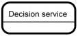
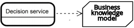
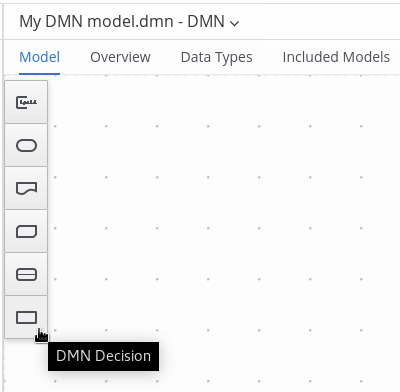
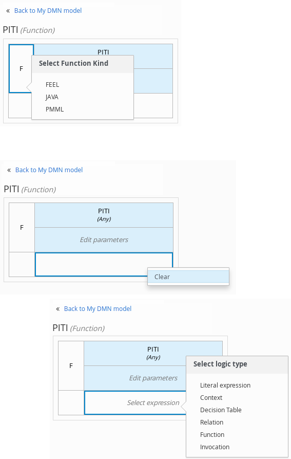
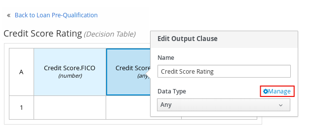
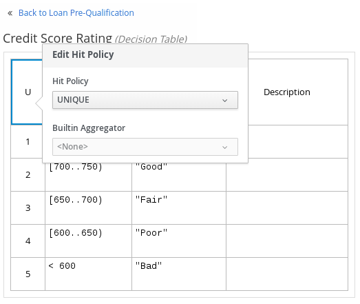
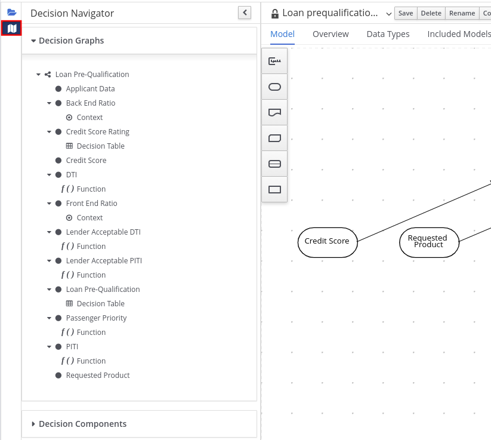

Introduction
Designing a decision service using DMN models
Abstract
- Preface
- 1. Decision Model and Notation (DMN)
- 2. DMN support in Red Hat Decision Manager
- 3. Creating and editing DMN models in Business Central
- 4. DMN model execution
- 5. Additional resources
- A. Versioning information
Preface
As a business analyst or business rules developer, you can use Decision Model and Notation (DMN) to model a decision service graphically in a decision requirements diagram (DRD). This diagram consists of one or more decision requirements graphs (DRGs) that trace business decisions from start to finish, with each decision node using logic defined in DMN boxed expressions such as decision tables. Red Hat Decision Manager provides design and runtime support for DMN 1.2 models at conformance level 3. You can design your DMN models directly in Business Central or import existing DMN models into your Red Hat Decision Manager projects for deployment and execution.
For more information about DMN, see the Object Management Group (OMG) Decision Model and Notation specification.
Chapter 1. Decision Model and Notation (DMN)
Decision Model and Notation (DMN) is a standard established by the Object Management Group (OMG) for describing and modeling operational decisions. DMN defines an XML schema that enables DMN models to be shared between DMN-compliant platforms and across organizations so that business analysts and business rules developers can collaborate in designing and implementing DMN decision services. The DMN standard is similar to and can be used together with the Business Process Model and Notation (BPMN) standard for designing and modeling business processes.
For more information about the background and applications of DMN, see the OMG Decision Model and Notation specification.
1.1. DMN conformance levels
The DMN specification defines three incremental levels of conformance in a software implementation. A product that claims compliance at one level must also be compliant with any preceding levels. For example, a conformance level 3 implementation must also include the supported components in conformance levels 1 and 2. For the formal definitions of each conformance level, see the OMG Decision Model and Notation specification.
The following list summarizes the three DMN conformance levels:
- Conformance level 1
- A DMN conformance level 1 implementation supports decision requirement diagrams (DRDs), decision logic, and decision tables, but decision models are not executable. Any language can be used to define the expressions, including natural, unstructured languages.
- Conformance level 2
- A DMN conformance level 2 implementation includes the requirements in conformance level 1, and supports Simplified Friendly Enough Expression Language (S-FEEL) expressions and fully executable decision models.
- Conformance level 3
- A DMN conformance level 3 implementation includes the requirements in conformance levels 1 and 2, and supports Friendly Enough Expression Language (FEEL) expressions, the full set of boxed expressions, and fully executable decision models.
Red Hat Decision Manager provides design and runtime support for DMN 1.2 models at conformance level 3. You can design your DMN models directly in Business Central or import existing DMN models into your Red Hat Decision Manager projects for deployment and execution.
1.2. DMN decision requirements diagram (DRD) components
A decision requirements diagram (DRD) is a visual representation of your DMN model. This diagram consists of one or more decision requirements graphs (DRGs) that represent a particular domain of an overall DRD. The DRGs trace business decisions using decision nodes, business knowledge models, sources of business knowledge, input data, and decision services.
The following table summarizes the components in a DRD:
Table 1.1. DRD components
| Component | Description | Notation | |
|---|---|---|---|
|
Elements |
Decision |
Node where one or more input elements determine an output based on defined decision logic. |  |
|
Business knowledge model |
Reusable function with one or more decision elements. Decisions that have the same logic but depend on different sub-input data or sub-decisions use business knowledge models to determine which procedure to follow. |  | |
|
Knowledge source |
External authorities, documents, committees, or policies that regulate a decision or business knowledge model. Knowledge sources are references to real-world factors rather than executable business rules. |  | |
|
Input data |
Information used in a decision node or a business knowledge model. Input data usually includes business-level concepts or objects relevant to the business, such as loan applicant data used in a lending strategy. | ||
|
Decision service |
Top-level decision containing a set of reusable decisions published as a service for invocation. A decision service can be invoked from an external application or a BPMN business process. |  | |
|
Requirement connectors |
Information requirement |
Connection from an input data node or decision node to another decision node that requires the information. |  |
|
Knowledge requirement |
Connection from a business knowledge model to a decision node or to another business knowledge model that invokes the decision logic. |  | |
|
Authority requirement |
Connection from an input data node or a decision node to a dependent knowledge source or from a knowledge source to a decision node, business knowledge model, or another knowledge source. |  | |
|
Artifacts |
Text annotation |
Explanatory note associated with an input data node, decision node, business knowledge model, or knowledge source. | |
|
Association |
Connection from an input data node, decision node, business knowledge model, or knowledge source to a text annotation. |  | |
The following table summarizes the permitted connectors between DRD elements:
Table 1.2. DRD connector rules
| Starts from | Connects to | Connection type | Example |
|---|---|---|---|
|
Decision |
Decision |
Information requirement |  |
|
Business knowledge model |
Decision |
Knowledge requirement |  |
|
Business knowledge model |  | ||
|
Decision service |
Decision |
Knowledge requirement |  |
|
Business knowledge model |  | ||
|
Input data |
Decision |
Information requirement | |
|
Knowledge source |
Authority requirement |  | |
|
Knowledge source |
Decision |
Authority requirement |  |
|
Business knowledge model |  | ||
|
Knowledge source |  | ||
|
Decision |
Text annotation |
Association |  |
|
Business knowledge model | |||
|
Knowledge source |  | ||
|
Input data |
The following example DRD illustrates some of these DMN components in practice:
Figure 1.1. Example DRD: Loan prequalification
The following example DRD illustrates DMN components that are part of a reusable decision service:
Figure 1.2. Example DRD: Phone call handling as a decision service

In a DMN decision service node, the decision nodes in the bottom segment incorporate input data from outside of the decision service to arrive at a final decision in the top segment of the decision service node. The resulting top-level decisions from the decision service are then implemented in any subsequent decisions or business knowledge requirements of the DMN model. You can reuse DMN decision services in other DMN models to apply the same decision logic with different input data and different outgoing connections.
1.3. Rule expressions in FEEL
Friendly Enough Expression Language (FEEL) is an expression language defined by the Object Management Group (OMG) DMN specification. FEEL expressions define the logic of a decision in a DMN model. FEEL is designed to facilitate both decision modeling and execution by assigning semantics to the decision model constructs. FEEL expressions in decision requirements diagrams (DRDs) occupy table cells in boxed expressions for decision nodes and business knowledge models.
For more information about FEEL in DMN, see the OMG Decision Model and Notation specification.
1.3.1. Variable and function names in FEEL
Unlike many traditional expression languages, Friendly Enough Expression Language (FEEL) supports spaces and a few special characters as part of variable and function names. A FEEL name must start with a letter, ?, or _ element. The unicode letter characters are also allowed. Variable names cannot start with a language keyword, such as and, true, or every. The remaining characters in a variable name can be any of the starting characters, as well as digits, white spaces, and special characters such as +, -, /, *, ', and ..
For example, the following names are all valid FEEL names:
- Age
- Birth Date
- Flight 234 pre-check procedure
Several limitations apply to variable and function names in FEEL:
- Ambiguity
-
The use of spaces, keywords, and other special characters as part of names can make FEEL ambiguous. The ambiguities are resolved in the context of the expression, matching names from left to right. The parser resolves the variable name as the longest name matched in scope. You can use
( )to disambiguate names if necessary. - Spaces in names
The DMN specification limits the use of spaces in FEEL names. According to the DMN specification, names can contain multiple spaces but not two consecutive spaces.
In order to make the language easier to use and avoid common errors due to spaces, Red Hat Decision Manager removes the limitation on the use of consecutive spaces. Red Hat Decision Manager supports variable names with any number of consecutive spaces, but normalizes them into a single space. For example, the variable references
First Namewith one space andFirst Namewith two spaces are both acceptable in Red Hat Decision Manager.Red Hat Decision Manager also normalizes the use of other white spaces, like the non-breakable white space that is common in web pages, tabs, and line breaks. From a Red Hat Decision Manager FEEL engine perspective, all of these characters are normalized into a single white space before processing.
- The keyword
in -
The keyword
inis the only keyword in the language that cannot be used as part of a variable name. Although the specifications allow the use of keywords in the middle of variable names, the use ofinin variable names conflicts with the grammar definition offor,everyandsomeexpression constructs.
1.3.2. Data types in FEEL
Friendly Enough Expression Language (FEEL) supports the following data types:
- Numbers
- Strings
- Boolean values
- Dates
- Time
- Date and time
- Days and time duration
- Years and months duration
- Functions
- Contexts
- Ranges (or intervals)
- Lists
The DMN specification currently does not provide an explicit way of declaring a variable as a function, context, range, or list, but Red Hat Decision Manager extends the DMN built-in types to support variables of these types.
The following list describes each data type:
- Numbers
Numbers in FEEL are based on the IEEE 754-2008 Decimal 128 format, with 34 digits of precision. Internally, numbers are represented in Java as
BigDecimalswithMathContext DECIMAL128. FEEL supports only one number data type, so the same type is used to represent both integers and floating point numbers.FEEL numbers use a dot (
.) as a decimal separator. FEEL does not support-INF,+INF, orNaN. FEEL usesnullto represent invalid numbers.Red Hat Decision Manager extends the DMN specification and supports additional number notations:
-
Scientific: You can use scientific notation with the suffix
e<exp>orE<exp>. For example,1.2e3is the same as writing the expression1.2*10**3, but is a literal instead of an expression. -
Hexadecimal: You can use hexadecimal numbers with the prefix
0x. For example,0xffis the same as the decimal number255. Both uppercase and lowercase letters are supported. For example,0XFFis the same as0xff. -
Type suffixes: You can use the type suffixes
f,F,d,D,l, andL. These suffixes are ignored.
-
Scientific: You can use scientific notation with the suffix
- Strings
Strings in FEEL are any sequence of characters delimited by double quotation marks.
Example:
"John Doe"
- Boolean values
-
FEEL uses three-valued boolean logic, so a boolean logic expression may have values
true,false, ornull. - Dates
Date literals are not supported in FEEL, but you can use the built-in
date()function to construct date values. Date strings in FEEL follow the format defined in the XML Schema Part 2: Datatypes document. The format is"YYYY-MM-DD"whereYYYYis the year with four digits,MMis the number of the month with two digits, andDDis the number of the day.Example:
date( "2017-06-23" )
Date objects have time equal to
"00:00:00", which is midnight. The dates are considered to be local, without a timezone.- Time
Time literals are not supported in FEEL, but you can use the built-in
time()function to construct time values. Time strings in FEEL follow the format defined in the XML Schema Part 2: Datatypes document. The format is"hh:mm:ss[.uuu][(+-)hh:mm]"wherehhis the hour of the day (from00to23),mmis the minutes in the hour, andssis the number of seconds in the minute. Optionally, the string may define the number of milliseconds (uuu) within the second and contain a positive (+) or negative (-) offset from UTC time to define its timezone. Instead of using an offset, you can use the letterzto represent the UTC time, which is the same as an offset of-00:00. If no offset is defined, the time is considered to be local.Examples:
time( "04:25:12" ) time( "14:10:00+02:00" ) time( "22:35:40.345-05:00" ) time( "15:00:30z" )
Time values that define an offset or a timezone cannot be compared to local times that do not define an offset or a timezone.
- Date and time
Date and time literals are not supported in FEEL, but you can use the built-in
date and time()function to construct date and time values. Date and time strings in FEEL follow the format defined in the XML Schema Part 2: Datatypes document. The format is"<date>T<time>", where<date>and<time>follow the prescribed XML schema formatting, conjoined byT.Examples:
date and time( "2017-10-22T23:59:00" ) date and time( "2017-06-13T14:10:00+02:00" ) date and time( "2017-02-05T22:35:40.345-05:00" ) date and time( "2017-06-13T15:00:30z" )
Date and time values that define an offset or a timezone cannot be compared to local date and time values that do not define an offset or a timezone.
ImportantIf your implementation of the DMN specification does not support spaces in the XML schema, use the keyword
dateTimeas a synonym ofdate and time.- Days and time duration
Days and time duration literals are not supported in FEEL, but you can use the built-in
duration()function to construct days and time duration values. Days and time duration strings in FEEL follow the format defined in the XML Schema Part 2: Datatypes document, but are restricted to only days, hours, minutes and seconds. Months and years are not supported.Examples:
duration( "P1DT23H12M30S" ) duration( "P23D" ) duration( "PT12H" ) duration( "PT35M" )
ImportantIf your implementation of the DMN specification does not support spaces in the XML schema, use the keyword
dayTimeDurationas a synonym ofdays and time duration.- Years and months duration
Years and months duration literals are not supported in FEEL, but you can use the built-in
duration()function to construct days and time duration values. Years and months duration strings in FEEL follow the format defined in the XML Schema Part 2: Datatypes document, but are restricted to only years and months. Days, hours, minutes, or seconds are not supported.Examples:
duration( "P3Y5M" ) duration( "P2Y" ) duration( "P10M" ) duration( "P25M" )
ImportantIf your implementation of the DMN specification does not support spaces in the XML schema, use the keyword
yearMonthDurationas a synonym ofyears and months duration.- Functions
FEEL has
functionliterals (or anonymous functions) that you can use to create functions. The DMN specification currently does not provide an explicit way of declaring a variable as afunction, but Red Hat Decision Manager extends the DMN built-in types to support variables of functions.Example:
function(a, b) a + b
In this example, the FEEL expression creates a function that adds the parameters
aandband returns the result.- Contexts
FEEL has
contextliterals that you can use to create contexts. Acontextin FEEL is a list of key and value pairs, similar to maps in languages like Java. The DMN specification currently does not provide an explicit way of declaring a variable as acontext, but Red Hat Decision Manager extends the DMN built-in types to support variables of contexts.Example:
{ x : 5, y : 3 }In this example, the expression creates a context with two entries,
xandy, representing a coordinate in a chart.In DMN 1.2, another way to create contexts is to create an item definition that contains the list of keys as attributes, and then declare the variable as having that item definition type.
The Red Hat Decision Manager DMN API supports DMN
ItemDefinitionstructural types in aDMNContextrepresented in two ways:-
User-defined Java type: Must be a valid JavaBeans object defining properties and getters for each of the components in the DMN
ItemDefinition. If necessary, you can also use the@FEELPropertyannotation for those getters representing a component name which would result in an invalid Java identifier. -
java.util.Mapinterface: The map needs to define the appropriate entries, with the keys corresponding to the component name in the DMNItemDefinition.
-
User-defined Java type: Must be a valid JavaBeans object defining properties and getters for each of the components in the DMN
- Ranges (or intervals)
FEEL has
rangeliterals that you can use to create ranges or intervals. Arangein FEEL is a value that defines a lower and an upper bound, where either can be open or closed. The DMN specification currently does not provide an explicit way of declaring a variable as arange, but Red Hat Decision Manager extends the DMN built-in types to support variables of ranges.The syntax of a range is defined in the following formats:
range := interval_start endpoint '..' endpoint interval_end interval_start := open_start | closed_start open_start := '(' | ']' closed_start := '[' interval_end := open_end | closed_end open_end := ')' | '[' closed_end := ']' endpoint := expressionThe expression for the endpoint must return a comparable value, and the lower bound endpoint must be lower than the upper bound endpoint.
For example, the following literal expression defines an interval between
1and10, including the boundaries (a closed interval on both endpoints):[ 1 .. 10 ]
The following literal expression defines an interval between 1 hour and 12 hours, including the lower boundary (a closed interval), but excluding the upper boundary (an open interval):
[ duration("PT1H") .. duration("PT12H") ]You can use ranges in decision tables to test for ranges of values, or use ranges in simple literal expressions. For example, the following literal expression returns
trueif the value of a variablexis between0and100:x in [ 1 .. 100 ]
- Lists
FEEL has
listliterals that you can use to create lists of items. Alistin FEEL is represented by a comma-separated list of values enclosed in square brackets. The DMN specification currently does not provide an explicit way of declaring a variable as alist, but Red Hat Decision Manager extends the DMN built-in types to support variables of lists.Example:
[ 2, 3, 4, 5 ]
All lists in FEEL contain elements of the same type and are immutable. Elements in a list can be accessed by index, where the first element is
1. Negative indexes can access elements starting from the end of the list so that-1is the last element.For example, the following expression returns the second element of a list
x:x[2]
The following expression returns the second-to-last element of a list
x:x[-2]
Elements in a list can also be counted by the function
count, which uses the list of elements as the parameter.For example, the following expression returns
4:count([ 2, 3, 4, 5 ])
1.4. DMN decision logic in boxed expressions
Boxed expressions in DMN are tables that you use to define the underlying logic of decision nodes and business knowledge models in a decision requirements diagram (DRD) or decision requirements graph (DRG). Some boxed expressions can contain other boxed expressions, but the top-level boxed expression corresponds to the decision logic of a single DRD artifact. While DRDs with one or more DRGs represent the flow of a DMN decision model, boxed expressions define the actual decision logic of individual nodes. DRDs and boxed expressions together form a complete and functional DMN decision model.
The following are the types of DMN boxed expressions:
- Decision tables
- Literal expressions
- Contexts
- Relations
- Functions
- Invocations
- Lists
Red Hat Decision Manager does not provide boxed list expressions in Business Central, but supports a FEEL list data type that you can use in boxed literal expressions. For more information about the list data type and other FEEL data types in Red Hat Decision Manager, see Section 1.3.2, “Data types in FEEL”.
All Friendly Enough Expression Language (FEEL) expressions that you use in your boxed expressions must conform to the FEEL syntax requirements in the OMG Decision Model and Notation specification.
1.4.1. DMN decision tables
A decision table in DMN is a visual representation of one or more business rules in a tabular format. You use decision tables to define rules for a decision node that applies those rules at a given point in the decision model. Each rule consists of a single row in the table, and includes columns that define the conditions (input) and outcome (output) for that particular row. The definition of each row is precise enough to derive the outcome using the values of the conditions. Input and output values can be FEEL expressions or defined data type values.
For example, the following decision table determines credit score ratings based on a defined range of a loan applicant’s credit score:
Figure 1.3. Decision table for credit score rating

The following decision table determines the next step in a lending strategy for applicants depending on applicant loan eligibility and the bureau call type:
Figure 1.4. Decision table for lending strategy

The following decision table determines applicant qualification for a loan as the concluding decision node in a loan prequalification decision model:
Figure 1.5. Decision table for loan prequalification

Decision tables are a popular way of modeling rules and decision logic, and are used in many methodologies (such as DMN) and implementation frameworks (such as Drools).
Red Hat Decision Manager supports both DMN decision tables and Drools-native decision tables, but they are different types of assets with different syntax requirements and are not interchangeable. For more information about Drools-native decision tables in Red Hat Decision Manager, see Designing a decision service using spreadsheet decision tables.
1.4.1.1. Hit policies in DMN decision tables
Hit policies determine how to reach an outcome when multiple rules in a decision table match the provided input values. For example, if one rule in a decision table applies a sales discount to military personnel and another rule applies a discount to students, then when a customer is both a student and in the military, the decision table hit policy must indicate whether to apply one discount or the other (Unique, First) or both discounts (Collect Sum). You specify the single character of the hit policy (U, F, C+) in the upper-left corner of the decision table.
The following decision table hit policies are supported in DMN:
- Unique (U): Permits only one rule to match. Any overlap raises an error.
- Any (A): Permits multiple rules to match, but they must all have the same output. If multiple matching rules do not have the same output, an error is raised.
- Priority (P): Permits multiple rules to match, with different outputs. The output that comes first in the output values list is selected.
- First (F): Uses the first match in rule order.
Collect (C+, C>, C<, C#): Aggregates output from multiple rules based on an aggregation function.
- Collect ( C ): Aggregates values in an arbitrary list.
- Collect Sum (C+): Outputs the sum of all collected values. Values must be numeric.
- Collect Min (C<): Outputs the minimum value among the matches. The resulting values must be comparable, such as numbers, dates, or text (lexicographic order).
- Collect Max (C>): Outputs the maximum value among the matches. The resulting values must be comparable, such as numbers, dates or text (lexicographic order).
- Collect Count (C#): Outputs the number of matching rules.
1.4.2. Boxed literal expressions
A boxed literal expression in DMN is a literal FEEL expression as text in a table cell, typically with a labeled column and an assigned data type. You use boxed literal expressions to define simple or complex node logic or decision data directly in FEEL for a particular node in a decision. Literal FEEL expressions must conform to FEEL syntax requirements in the OMG Decision Model and Notation specification.
For example, the following boxed literal expression defines the minimum acceptable PITI calculation (principal, interest, taxes, and insurance) in a lending decision, where acceptable rate is a variable defined in the DMN model:
Figure 1.6. Boxed literal expression for minimum PITI value
The following boxed literal expression sorts a list of possible dating candidates (soul mates) in an online dating application based on their score on criteria such as age, location, and interests:
Figure 1.7. Boxed literal expression for matching online dating candidates

1.4.3. Boxed context expressions
A boxed context expression in DMN is a set of variable names and values with a result value. Each name-value pair is a context entry. You use context expressions to represent data definitions in decision logic and set a value for a desired decision element within the DMN decision model. A value in a boxed context expression can be a data type value or FEEL expression, or can contain a nested sub-expression of any type, such as a decision table, a literal expression, or another context expression.
For example, the following boxed context expression defines the factors for sorting delayed passengers in a flight-rebooking decision model, based on defined data types (tPassengerTable, tFlightNumberList):
Figure 1.8. Boxed context expression for flight passenger waiting list

The following boxed context expression defines the factors that determine whether a loan applicant can meet minimum mortgage payments based on principal, interest, taxes, and insurance (PITI), represented as a front-end ratio calculation with a sub-context expression:
Figure 1.9. Boxed context expression for front-end client PITI ratio

1.4.4. Boxed relation expressions
A boxed relation expression in DMN is a traditional data table with information about given entities, listed as rows. You use boxed relation tables to define decision data for relevant entities in a decision at a particular node. Boxed relation expressions are similar to context expressions in that they set variable names and values, but relation expressions contain no result value and list all variable values based on a single defined variable in each column.
For example, the following boxed relation expression provides information about employees in an employee rostering decision:
Figure 1.10. Boxed relation expression with employee information

1.4.5. Boxed function expressions
A boxed function expression in DMN is a parameterized boxed expression containing a literal FEEL expression, a nested context expression of an external JAVA or PMML function, or a nested boxed expression of any type. By default, all business knowledge models are defined as boxed function expressions. You use boxed function expressions to call functions on your decision logic and to define all business knowledge models.
For example, the following boxed function expression determines airline flight capacity in a flight-rebooking decision model:
Figure 1.11. Boxed function expression for flight capacity

The following boxed function expression contains a basic Java function as a context expression for determining absolute value in a decision model calculation:
Figure 1.12. Boxed function expression for absolute value

The following boxed function expression determines a monthly mortgage installment as a business knowledge model in a lending decision, with the function value defined as a nested context expression:
Figure 1.13. Boxed function expression for installment calculation in business knowledge model

1.4.6. Boxed invocation expressions
A boxed invocation expression in DMN is a boxed expression that invokes a business knowledge model. A boxed invocation expression contains the name of the business knowledge model to be invoked and a list of parameter bindings. Each binding is represented by two boxed expressions on a row: The box on the left contains the name of a parameter and the box on the right contains the binding expression whose value is assigned to the parameter to evaluate the invoked business knowledge model. You use boxed invocations to invoke at a particular decision node a business knowledge model defined in the decision model.
For example, the following boxed invocation expression invokes a Reassign Next Passenger business knowledge model as the concluding decision node in a flight-rebooking decision model:
Figure 1.14. Boxed invocation expression to reassign flight passengers
The following boxed invocation expression invokes an InstallmentCalculation business knowledge model to calculate a monthly installment amount for a loan before proceeding to affordability decisions:
Figure 1.15. Boxed invocation expression for required monthly installment

1.5. DMN model example
The following is a real-world DMN model example that demonstrates how you can use decision modeling to reach a decision based on input data, circumstances, and company guidelines. In this scenario, a flight from San Diego to New York is canceled, requiring the affected airline to find alternate arrangements for its inconvenienced passengers.
First, the airline collects the information necessary to determine how best to get the travelers to their destinations:
- Input data
- List of flights
- List of passengers
- Decisions
- Prioritize the passengers who will get seats on a new flight
- Determine which flights those passengers will be offered
- Business knowledge models
- The company process for determining passenger priority
- Any flights that have space available
- Company rules for determining how best to reassign inconvenienced passengers
The airline then uses the DMN standard to model its decision process in the following decision requirements diagram (DRD) for determining the best rebooking solution:
Figure 1.16. DRD for flight rebooking

Similar to flowcharts, DRDs use shapes to represent the different elements in a process. Ovals contain the two necessary input data, rectangles contain the decision points in the model, and rectangles with clipped corners (business knowledge models) contain reusable logic that can be repeatedly invoked.
The DRD draws logic for each element from boxed expressions that provide variable definitions using FEEL expressions or data type values.
Some boxed expressions are basic, such as the following decision for establishing a prioritized waiting list:
Figure 1.17. Boxed context expression example for prioritized wait list
Some boxed expressions are more complex with greater detail and calculation, such as the following business knowledge model for reassigning the next delayed passenger:
Figure 1.18. Boxed function expression for passenger reassignment
The following is the DMN source file for this decision model:
<dmn:definitions xmlns="https://www.drools.org/kie-dmn/Flight-rebooking" xmlns:dmn="http://www.omg.org/spec/DMN/20151101/dmn.xsd" xmlns:feel="http://www.omg.org/spec/FEEL/20140401" id="_0019_flight_rebooking" name="0019-flight-rebooking" namespace="https://www.drools.org/kie-dmn/Flight-rebooking">
<dmn:itemDefinition id="_tFlight" name="tFlight">
<dmn:itemComponent id="_tFlight_Flight" name="Flight Number">
<dmn:typeRef>feel:string</dmn:typeRef>
</dmn:itemComponent>
<dmn:itemComponent id="_tFlight_From" name="From">
<dmn:typeRef>feel:string</dmn:typeRef>
</dmn:itemComponent>
<dmn:itemComponent id="_tFlight_To" name="To">
<dmn:typeRef>feel:string</dmn:typeRef>
</dmn:itemComponent>
<dmn:itemComponent id="_tFlight_Dep" name="Departure">
<dmn:typeRef>feel:dateTime</dmn:typeRef>
</dmn:itemComponent>
<dmn:itemComponent id="_tFlight_Arr" name="Arrival">
<dmn:typeRef>feel:dateTime</dmn:typeRef>
</dmn:itemComponent>
<dmn:itemComponent id="_tFlight_Capacity" name="Capacity">
<dmn:typeRef>feel:number</dmn:typeRef>
</dmn:itemComponent>
<dmn:itemComponent id="_tFlight_Status" name="Status">
<dmn:typeRef>feel:string</dmn:typeRef>
</dmn:itemComponent>
</dmn:itemDefinition>
<dmn:itemDefinition id="_tFlightTable" isCollection="true" name="tFlightTable">
<dmn:typeRef>tFlight</dmn:typeRef>
</dmn:itemDefinition>
<dmn:itemDefinition id="_tPassenger" name="tPassenger">
<dmn:itemComponent id="_tPassenger_Name" name="Name">
<dmn:typeRef>feel:string</dmn:typeRef>
</dmn:itemComponent>
<dmn:itemComponent id="_tPassenger_Status" name="Status">
<dmn:typeRef>feel:string</dmn:typeRef>
</dmn:itemComponent>
<dmn:itemComponent id="_tPassenger_Miles" name="Miles">
<dmn:typeRef>feel:number</dmn:typeRef>
</dmn:itemComponent>
<dmn:itemComponent id="_tPassenger_Flight" name="Flight Number">
<dmn:typeRef>feel:string</dmn:typeRef>
</dmn:itemComponent>
</dmn:itemDefinition>
<dmn:itemDefinition id="_tPassengerTable" isCollection="true" name="tPassengerTable">
<dmn:typeRef>tPassenger</dmn:typeRef>
</dmn:itemDefinition>
<dmn:itemDefinition id="_tFlightNumberList" isCollection="true" name="tFlightNumberList">
<dmn:typeRef>feel:string</dmn:typeRef>
</dmn:itemDefinition>
<dmn:inputData id="i_Flight_List" name="Flight List">
<dmn:variable name="Flight List" typeRef="tFlightTable"/>
</dmn:inputData>
<dmn:inputData id="i_Passenger_List" name="Passenger List">
<dmn:variable name="Passenger List" typeRef="tPassengerTable"/>
</dmn:inputData>
<dmn:decision name="Prioritized Waiting List" id="d_PrioritizedWaitingList">
<dmn:variable name="Prioritized Waiting List" typeRef="tPassengerTable"/>
<dmn:informationRequirement>
<dmn:requiredInput href="#i_Passenger_List"/>
</dmn:informationRequirement>
<dmn:informationRequirement>
<dmn:requiredInput href="#i_Flight_List"/>
</dmn:informationRequirement>
<dmn:knowledgeRequirement>
<dmn:requiredKnowledge href="#b_PassengerPriority"/>
</dmn:knowledgeRequirement>
<dmn:context>
<dmn:contextEntry>
<dmn:variable name="Cancelled Flights" typeRef="tFlightNumberList"/>
<dmn:literalExpression>
<dmn:text>Flight List[ Status = "cancelled" ].Flight Number</dmn:text>
</dmn:literalExpression>
</dmn:contextEntry>
<dmn:contextEntry>
<dmn:variable name="Waiting List" typeRef="tPassengerTable"/>
<dmn:literalExpression>
<dmn:text>Passenger List[ list contains( Cancelled Flights, Flight Number ) ]</dmn:text>
</dmn:literalExpression>
</dmn:contextEntry>
<dmn:contextEntry>
<dmn:literalExpression>
<dmn:text>sort( Waiting List, passenger priority )</dmn:text>
</dmn:literalExpression>
</dmn:contextEntry>
</dmn:context>
</dmn:decision>
<dmn:decision name="Rebooked Passengers" id="d_RebookedPassengers">
<dmn:variable name="Rebooked Passengers" typeRef="tPassengerTable"/>
<dmn:informationRequirement>
<dmn:requiredDecision href="#d_PrioritizedWaitingList"/>
</dmn:informationRequirement>
<dmn:informationRequirement>
<dmn:requiredInput href="#i_Flight_List"/>
</dmn:informationRequirement>
<dmn:knowledgeRequirement>
<dmn:requiredKnowledge href="#b_ReassignNextPassenger"/>
</dmn:knowledgeRequirement>
<dmn:invocation>
<dmn:literalExpression>
<dmn:text>reassign next passenger</dmn:text>
</dmn:literalExpression>
<dmn:binding>
<dmn:parameter name="Waiting List"/>
<dmn:literalExpression>
<dmn:text>Prioritized Waiting List</dmn:text>
</dmn:literalExpression>
</dmn:binding>
<dmn:binding>
<dmn:parameter name="Reassigned Passengers List"/>
<dmn:literalExpression>
<dmn:text>[]</dmn:text>
</dmn:literalExpression>
</dmn:binding>
<dmn:binding>
<dmn:parameter name="Flights"/>
<dmn:literalExpression>
<dmn:text>Flight List</dmn:text>
</dmn:literalExpression>
</dmn:binding>
</dmn:invocation>
</dmn:decision>
<dmn:businessKnowledgeModel id="b_PassengerPriority" name="passenger priority">
<dmn:encapsulatedLogic>
<dmn:formalParameter name="Passenger1" typeRef="tPassenger"/>
<dmn:formalParameter name="Passenger2" typeRef="tPassenger"/>
<dmn:decisionTable hitPolicy="UNIQUE">
<dmn:input id="b_Passenger_Priority_dt_i_P1_Status" label="Passenger1.Status">
<dmn:inputExpression typeRef="feel:string">
<dmn:text>Passenger1.Status</dmn:text>
</dmn:inputExpression>
<dmn:inputValues>
<dmn:text>"gold", "silver", "bronze"</dmn:text>
</dmn:inputValues>
</dmn:input>
<dmn:input id="b_Passenger_Priority_dt_i_P2_Status" label="Passenger2.Status">
<dmn:inputExpression typeRef="feel:string">
<dmn:text>Passenger2.Status</dmn:text>
</dmn:inputExpression>
<dmn:inputValues>
<dmn:text>"gold", "silver", "bronze"</dmn:text>
</dmn:inputValues>
</dmn:input>
<dmn:input id="b_Passenger_Priority_dt_i_P1_Miles" label="Passenger1.Miles">
<dmn:inputExpression typeRef="feel:string">
<dmn:text>Passenger1.Miles</dmn:text>
</dmn:inputExpression>
</dmn:input>
<dmn:output id="b_Status_Priority_dt_o" label="Passenger1 has priority">
<dmn:outputValues>
<dmn:text>true, false</dmn:text>
</dmn:outputValues>
<dmn:defaultOutputEntry>
<dmn:text>false</dmn:text>
</dmn:defaultOutputEntry>
</dmn:output>
<dmn:rule id="b_Passenger_Priority_dt_r1">
<dmn:inputEntry id="b_Passenger_Priority_dt_r1_i1">
<dmn:text>"gold"</dmn:text>
</dmn:inputEntry>
<dmn:inputEntry id="b_Passenger_Priority_dt_r1_i2">
<dmn:text>"gold"</dmn:text>
</dmn:inputEntry>
<dmn:inputEntry id="b_Passenger_Priority_dt_r1_i3">
<dmn:text>>= Passenger2.Miles</dmn:text>
</dmn:inputEntry>
<dmn:outputEntry id="b_Passenger_Priority_dt_r1_o1">
<dmn:text>true</dmn:text>
</dmn:outputEntry>
</dmn:rule>
<dmn:rule id="b_Passenger_Priority_dt_r2">
<dmn:inputEntry id="b_Passenger_Priority_dt_r2_i1">
<dmn:text>"gold"</dmn:text>
</dmn:inputEntry>
<dmn:inputEntry id="b_Passenger_Priority_dt_r2_i2">
<dmn:text>"silver","bronze"</dmn:text>
</dmn:inputEntry>
<dmn:inputEntry id="b_Passenger_Priority_dt_r2_i3">
<dmn:text>-</dmn:text>
</dmn:inputEntry>
<dmn:outputEntry id="b_Passenger_Priority_dt_r2_o1">
<dmn:text>true</dmn:text>
</dmn:outputEntry>
</dmn:rule>
<dmn:rule id="b_Passenger_Priority_dt_r3">
<dmn:inputEntry id="b_Passenger_Priority_dt_r3_i1">
<dmn:text>"silver"</dmn:text>
</dmn:inputEntry>
<dmn:inputEntry id="b_Passenger_Priority_dt_r3_i2">
<dmn:text>"silver"</dmn:text>
</dmn:inputEntry>
<dmn:inputEntry id="b_Passenger_Priority_dt_r3_i3">
<dmn:text>>= Passenger2.Miles</dmn:text>
</dmn:inputEntry>
<dmn:outputEntry id="b_Passenger_Priority_dt_r3_o1">
<dmn:text>true</dmn:text>
</dmn:outputEntry>
</dmn:rule>
<dmn:rule id="b_Passenger_Priority_dt_r4">
<dmn:inputEntry id="b_Passenger_Priority_dt_r4_i1">
<dmn:text>"silver"</dmn:text>
</dmn:inputEntry>
<dmn:inputEntry id="b_Passenger_Priority_dt_r4_i2">
<dmn:text>"bronze"</dmn:text>
</dmn:inputEntry>
<dmn:inputEntry id="b_Passenger_Priority_dt_r4_i3">
<dmn:text>-</dmn:text>
</dmn:inputEntry>
<dmn:outputEntry id="b_Passenger_Priority_dt_r4_o1">
<dmn:text>true</dmn:text>
</dmn:outputEntry>
</dmn:rule>
<dmn:rule id="b_Passenger_Priority_dt_r5">
<dmn:inputEntry id="b_Passenger_Priority_dt_r5_i1">
<dmn:text>"bronze"</dmn:text>
</dmn:inputEntry>
<dmn:inputEntry id="b_Passenger_Priority_dt_r5_i2">
<dmn:text>"bronze"</dmn:text>
</dmn:inputEntry>
<dmn:inputEntry id="b_Passenger_Priority_dt_r5_i3">
<dmn:text>>= Passenger2.Miles</dmn:text>
</dmn:inputEntry>
<dmn:outputEntry id="b_Passenger_Priority_dt_r5_o1">
<dmn:text>true</dmn:text>
</dmn:outputEntry>
</dmn:rule>
</dmn:decisionTable>
</dmn:encapsulatedLogic>
<dmn:variable name="passenger priority" typeRef="feel:boolean"/>
</dmn:businessKnowledgeModel>
<dmn:businessKnowledgeModel id="b_ReassignNextPassenger" name="reassign next passenger">
<dmn:encapsulatedLogic>
<dmn:formalParameter name="Waiting List" typeRef="tPassengerTable"/>
<dmn:formalParameter name="Reassigned Passengers List" typeRef="tPassengerTable"/>
<dmn:formalParameter name="Flights" typeRef="tFlightTable"/>
<dmn:context>
<dmn:contextEntry>
<dmn:variable name="Next Passenger" typeRef="tPassenger"/>
<dmn:literalExpression>
<dmn:text>Waiting List[1]</dmn:text>
</dmn:literalExpression>
</dmn:contextEntry>
<dmn:contextEntry>
<dmn:variable name="Original Flight" typeRef="tFlight"/>
<dmn:literalExpression>
<dmn:text>Flights[ Flight Number = Next Passenger.Flight Number ][1]</dmn:text>
</dmn:literalExpression>
</dmn:contextEntry>
<dmn:contextEntry>
<dmn:variable name="Best Alternate Flight" typeRef="tFlight"/>
<dmn:literalExpression>
<dmn:text>Flights[ From = Original Flight.From and To = Original Flight.To and Departure > Original Flight.Departure and Status = "scheduled" and has capacity( item, Reassigned Passengers List ) ][1]</dmn:text>
</dmn:literalExpression>
</dmn:contextEntry>
<dmn:contextEntry>
<dmn:variable name="Reassigned Passenger" typeRef="tPassenger"/>
<dmn:context>
<dmn:contextEntry>
<dmn:variable name="Name" typeRef="feel:string"/>
<dmn:literalExpression>
<dmn:text>Next Passenger.Name</dmn:text>
</dmn:literalExpression>
</dmn:contextEntry>
<dmn:contextEntry>
<dmn:variable name="Status" typeRef="feel:string"/>
<dmn:literalExpression>
<dmn:text>Next Passenger.Status</dmn:text>
</dmn:literalExpression>
</dmn:contextEntry>
<dmn:contextEntry>
<dmn:variable name="Miles" typeRef="feel:number"/>
<dmn:literalExpression>
<dmn:text>Next Passenger.Miles</dmn:text>
</dmn:literalExpression>
</dmn:contextEntry>
<dmn:contextEntry>
<dmn:variable name="Flight Number" typeRef="feel:string"/>
<dmn:literalExpression>
<dmn:text>Best Alternate Flight.Flight Number</dmn:text>
</dmn:literalExpression>
</dmn:contextEntry>
</dmn:context>
</dmn:contextEntry>
<dmn:contextEntry>
<dmn:variable name="Remaining Waiting List" typeRef="tPassengerTable"/>
<dmn:literalExpression>
<dmn:text>remove( Waiting List, 1 )</dmn:text>
</dmn:literalExpression>
</dmn:contextEntry>
<dmn:contextEntry>
<dmn:variable name="Updated Reassigned Passengers List" typeRef="tPassengerTable"/>
<dmn:literalExpression>
<dmn:text>append( Reassigned Passengers List, Reassigned Passenger )</dmn:text>
</dmn:literalExpression>
</dmn:contextEntry>
<dmn:contextEntry>
<dmn:literalExpression>
<dmn:text>if count( Remaining Waiting List ) > 0 then reassign next passenger( Remaining Waiting List, Updated Reassigned Passengers List, Flights ) else Updated Reassigned Passengers List</dmn:text>
</dmn:literalExpression>
</dmn:contextEntry>
</dmn:context>
</dmn:encapsulatedLogic>
<dmn:variable name="reassign next passenger" typeRef="tPassengerTable"/>
<dmn:knowledgeRequirement>
<dmn:requiredKnowledge href="#b_HasCapacity"/>
</dmn:knowledgeRequirement>
</dmn:businessKnowledgeModel>
<dmn:businessKnowledgeModel id="b_HasCapacity" name="has capacity">
<dmn:encapsulatedLogic>
<dmn:formalParameter name="flight" typeRef="tFlight"/>
<dmn:formalParameter name="rebooked list" typeRef="tPassengerTable"/>
<dmn:literalExpression>
<dmn:text>flight.Capacity > count( rebooked list[ Flight Number = flight.Flight Number ] )</dmn:text>
</dmn:literalExpression>
</dmn:encapsulatedLogic>
<dmn:variable name="has capacity" typeRef="feel:boolean"/>
</dmn:businessKnowledgeModel>
</dmn:definitions>Chapter 2. DMN support in Red Hat Decision Manager
Red Hat Decision Manager provides design and runtime support for DMN 1.2 models at conformance level 3. You can integrate DMN models with your Red Hat Decision Manager decision services in several ways:
- Design your DMN models directly in Business Central using the DMN designer
- Import DMN files into your project in Business Central (Menu → Design → Projects → Import Asset)
- Package DMN files as part of your project knowledge JAR (KJAR) file without Business Central
In addition to all DMN conformance level 3 requirements, Red Hat Decision Manager also includes enhancements and fixes to FEEL and DMN model components to optimize the experience of implementing DMN decision services with Red Hat Decision Manager. From a platform perspective, DMN models are like any other business asset in Red Hat Decision Manager, such as DRL files or spreadsheet decision tables, that you can include in your Red Hat Decision Manager project and deploy to Decision Server in order to start your DMN decision services.
For more information about including external DMN files with your Red Hat Decision Manager project packaging and deployment method, see Packaging and deploying a Red Hat Decision Manager project.
2.1. Configurable DMN properties in Red Hat Decision Manager
Red Hat Decision Manager provides the following DMN properties that you can configure when you execute your DMN models on Decision Server or on your client application:
- org.kie.dmn.strictConformance
When enabled, this property disables by default any extensions or profiles provided beyond the DMN standard, such as some helper functions or enhanced features of DMN 1.2 backported into DMN 1.1. You can use this property to configure the decision engine to support only pure DMN features, such as when running the DMN Technology Compatibility Kit (TCK).
Default value:
false-Dorg.kie.dmn.strictConformance=true
- org.kie.dmn.runtime.typecheck
When enabled, this property enables verification of actual values conforming to their declared types in the DMN model, as input or output of DRD elements. You can use this property to verify whether data supplied to the DMN model or produced by the DMN model is compliant with what is specified in the model.
Default value:
false-Dorg.kie.dmn.runtime.typecheck=true
- org.kie.dmn.decisionservice.coercesingleton
By default, this property makes the result of a decision service defining a single output decision be the single value of the output decision value. When disabled, this property makes the result of a decision service defining a single output decision be a
contextwith the single entry for that decision. You can use this property to adjust your decision service outputs according to your project requirements.Default value:
true-Dorg.kie.dmn.decisionservice.coercesingleton=false
- org.kie.dmn.profiles.$PROFILE_NAME
When valorized with a Java fully qualified name, this property loads a DMN profile onto the decision engine at start time. You can use this property to implement a predefined DMN profile with supported features different from or beyond the DMN standard. For example, if you are creating DMN models using the Signavio DMN modeller, use this property to implement features from the Signavio DMN profile into your DMN decision service.
-Dorg.kie.dmn.profiles.signavio=org.kie.dmn.signavio.KieDMNSignavioProfile
- org.kie.dmn.compiler.execmodel
When enabled, this property enables DMN decision table logic to be compiled into executable rule models during run time. You can use this property to evaluate DMN decision table logic more efficiently. This property is helpful when the executable model compilation was not originally performed during project compile time. Enabling this property may result in added compile time during the first evaluation by the decision engine, but subsequent compilations are more efficient.
Default value:
false-Dorg.kie.dmn.compiler.execmodel=true
Chapter 3. Creating and editing DMN models in Business Central
You can use the DMN designer in Business Central to design DMN decision requirements diagrams (DRDs) and define decision logic for a complete and functional DMN decision model. Red Hat Decision Manager provides design and runtime support for DMN 1.2 models at conformance level 3, and includes enhancements and fixes to FEEL and DMN model components to optimize the experience of implementing DMN decision services with Red Hat Decision Manager.
Procedure
- In Business Central, go to Menu → Design → Projects and click the project name.
Create or import a DMN file in your Business Central project.
To create a DMN file, click Add Asset → DMN, enter an informative DMN model name, select the appropriate Package, and click Ok.
To import an existing DMN file, click Import Asset, enter the DMN model name, select the appropriate Package, select the DMN file to upload, and click Ok.
The new DMN file is now listed in the DMN panel of the Project Explorer, and the DMN decision requirements diagram (DRD) canvas appears.
NoteIf you imported a DMN file that does not contain layout information, the imported decision requirements diagram (DRD) is formatted automatically in the DMN designer. Click Save in the DMN designer to save the DRD layout.
Begin adding components to your new or imported DMN decision requirements diagram (DRD) by clicking and dragging one of the DMN nodes from the left toolbar:
Figure 3.1. Adding DRD components
The following DRD components are available:
- Decision: Use this node for a DMN decision, where one or more input elements determine an output based on defined decision logic.
- Business knowledge model: Use this node for reusable functions with one or more decision elements. Decisions that have the same logic but depend on different sub-input data or sub-decisions use business knowledge models to determine which procedure to follow.
- Knowledge source: Use this node for external authorities, documents, committees, or policies that regulate a decision or business knowledge model. Knowledge sources are references to real-world factors rather than executable business rules.
- Input data: Use this node for information used in a decision node or a business knowledge model. Input data usually includes business-level concepts or objects relevant to the business, such as loan applicant data used in a lending strategy.
- Text annotation: Use this node for explanatory notes associated with an input data node, decision node, business knowledge model, or knowledge source.
- Decision service: Use this node to enclose a set of reusable decisions implemented as a decision service for invocation. A decision service can be used in other DMN models and can be invoked from an external application or a BPMN business process.
- In the DMN designer canvas, double-click the new DRD node to enter an informative node name.
If the node is a decision or business knowledge model, select the node to display the node options and click the Edit icon to open the DMN boxed expression designer to define the decision logic for the node:
Figure 3.2. Opening a new decision node boxed expression
Figure 3.3. Opening a new business knowledge model boxed expression

By default, all business knowledge models are defined as boxed function expressions containing a literal FEEL expression, a nested context expression of an external JAVA or PMML function, or a nested boxed expression of any type.
For decision nodes, you click the undefined table to select the type of boxed expression you want to use, such as a boxed literal expression, boxed context expression, decision table, or other DMN boxed expression.
Figure 3.4. Selecting the logic type for a decision node

For business knowledge models, you click the top-left function cell to select the function type, or right-click the function value cell, select Clear, and select a boxed expression of another type.
Figure 3.5. Selecting the function or other logic type for a business knowledge model
In the selected boxed expression designer for either a decision node (any expression type) or business knowledge model (function expression), click the applicable table cells to define the table name, variable data types, variable names and values, function parameters and bindings, or FEEL expressions to include in the decision logic.
You can right-click cells for additional actions where applicable, such as inserting or removing table rows and columns or clearing table contents.
The following is an example decision table for a decision node that determines credit score ratings based on a defined range of a loan applicant’s credit score:
Figure 3.6. Decision node decision table for credit score rating

The following is an example boxed function expression for a business knowledge model that calculates mortgage payments based on principal, interest, taxes, and insurance (PITI) as a literal expression:
Figure 3.7. Business knowledge model function for PITI calculation

- After you define the decision logic for the selected node, click Back to "<MODEL_NAME>" to return to the DRD view.
For the selected DRD node, use the available connection options to create and connect to the next node in the DRD, or click and drag a new node onto the DRD canvas from the left toolbar.
The node type determines which connection options are supported. For example, an Input data node can connect to a decision node, knowledge source, or text annotation using the applicable connection type, whereas a Knowledge source node can connect to any DRD element. A Decision node can connect only to another decision or a text annotation.
The following connection types are available, depending on the node type:
- Information requirement: Use this connection from an input data node or decision node to another decision node that requires the information.
- Knowledge requirement: Use this connection from a business knowledge model to a decision node or to another business knowledge model that invokes the decision logic.
- Authority requirement: Use this connection from an input data node or a decision node to a dependent knowledge source or from a knowledge source to a decision node, business knowledge model, or another knowledge source.
- Association: Use this connection from an input data node, decision node, business knowledge model, or knowledge source to a text annotation.
Figure 3.8. Connecting credit score input to the credit score rating decision

- Continue adding and defining the remaining DRD components of your decision model. Periodically click Save in the DMN designer to save your work.
After you add and define all components of the DRD, click Save to save and validate the completed DRD.
The following is an example DRD for a loan prequalification decision model:
Figure 3.9. Completed DRD for loan prequalification
The following is an example DRD for a phone call handling decision model using a reusable decision service:
Figure 3.10. Completed DRD for phone call handling with a decision service
In a DMN decision service node, the decision nodes in the bottom segment incorporate input data from outside of the decision service to arrive at a final decision in the top segment of the decision service node. The resulting top-level decisions from the decision service are then implemented in any subsequent decisions or business knowledge requirements of the DMN model. You can reuse DMN decision services in other DMN models to apply the same decision logic with different input data and different outgoing connections.
3.1. Defining DMN decision logic in boxed expressions in Business Central
Boxed expressions in DMN are tables that you use to define the underlying logic of decision nodes and business knowledge models in a decision requirements diagram (DRD) or decision requirements graph (DRG). Some boxed expressions can contain other boxed expressions, but the top-level boxed expression corresponds to the decision logic of a single DRD artifact. While DRDs with one or more DRGs represent the flow of a DMN decision model, boxed expressions define the actual decision logic of individual nodes. DRDs and boxed expressions together form a complete and functional DMN decision model.
You can use the DMN designer in Business Central to define decision logic for your DRD components using built-in boxed expressions.
Prerequisites
- You have created or imported a DMN file in Business Central.
Procedure
- In Business Central, go to Menu → Design → Projects, click the project name, and select the DMN file you want to modify.
In the DMN designer canvas, select a decision node or business knowledge model that you want to define and click the Edit icon to open the DMN boxed expression designer:
Figure 3.11. Opening a new decision node boxed expression
Figure 3.12. Opening a new business knowledge model boxed expression
By default, all business knowledge models are defined as boxed function expressions containing a literal FEEL expression, a nested context expression of an external JAVA or PMML function, or a nested boxed expression of any type.
For decision nodes, you click the undefined table to select the type of boxed expression you want to use, such as a boxed literal expression, boxed context expression, decision table, or other DMN boxed expression.
Figure 3.13. Selecting the logic type for a decision node
For business knowledge models, you click the top-left function cell to select the function type, or right-click the function value cell, select Clear, and select a boxed expression of another type.
Figure 3.14. Selecting the function or other logic type for a business knowledge model
For this example, use a decision node and select Decision Table as the boxed expression type.
A decision table in DMN is a visual representation of one or more rules in a tabular format. Each rule consists of a single row in the table, and includes columns that define the conditions (input) and outcome (output) for that particular row.
-
Click the input column header to define the name and data type for the input condition. For example, name the input column Credit Score.FICO with a
numberdata type. This column specifies numeric credit score values or ranges of loan applicants. Click the output column header to define the name and data type for the output values. For example, name the output column Credit Score Rating and next to the Data Type option, click Manage to go to the Data Types page where you can create a custom data type with score ratings as constraints.
Figure 3.15. Managing data types for a column header value
On the Data Types page, click Add and create a Credit_Score_Rating data type as a
string:Figure 3.16. Adding a new data type

Click Constraints, select Enumeration from the drop-down options, and add the following constraints:
-
"Excellent" -
"Good" -
"Fair" -
"Poor" -
"Bad"
Figure 3.17. Adding constraints to the new data type
For information about constraint types and syntax requirements for the specified data type, see the Decision Model and Notation specification.
-
- Click OK to save the constraints and click Save to save the data type.
- Return to the Credit Score Rating decision table, click the Credit Score Rating column header, and set the data type to this new custom data type.
Use the Credit Score.FICO input column to define credit score values or ranges of values, and use the Credit Score Rating column to specify one of the corresponding ratings you defined in the Credit_Score_Rating data type.
Right-click any value cell to insert or delete rows (rules) or columns (clauses).
Figure 3.18. Decision node decision table for credit score rating
After you define all rules, click the top-left corner of the decision table to define the rule Hit Policy and Builtin Aggregator (for COLLECT hit policy only).
The hit policy determines how to reach an outcome when multiple rules in a decision table match the provided input values. The built-in aggregator determines how to aggregate rule values when you use the COLLECT hit policy.
Figure 3.19. Defining the decision table hit policy
The following example is a more complex decision table that determines applicant qualification for a loan as the concluding decision node in the same loan prequalification decision model:
Figure 3.20. Decision table for loan prequalification
For boxed expression types other than decision tables, you follow these guidelines similarly to navigate the boxed expression tables and define variables and parameters for decision logic, but according to the requirements of the boxed expression type. Some boxed expressions, such as boxed literal expressions, can be single-column tables, while other boxed expressions, such as function, context, and invocation expressions, can be multi-column tables with nested boxed expressions of other types.
For example, the following boxed context expression defines the parameters that determine whether a loan applicant can meet minimum mortgage payments based on principal, interest, taxes, and insurance (PITI), represented as a front-end ratio calculation with a sub-context expression:
Figure 3.21. Boxed context expression for front-end client PITI ratio
The following boxed function expression determines a monthly mortgage installment as a business knowledge model in a lending decision, with the function value defined as a nested context expression:
Figure 3.22. Boxed function expression for installment calculation in business knowledge model
For more information and examples of each boxed expression type, see Section 1.4, “DMN decision logic in boxed expressions”.
3.2. Creating custom data types for DMN boxed expressions in Business Central
In DMN boxed expressions in Business Central, data types determine the structure of the data that you use within an associated table, column, or field in the boxed expression. You can use default DMN data types (such as String, Number, Boolean) or you can create custom data types to specify additional fields and constraints that you want to implement for the boxed expression values.
Custom data types that you create for a boxed expression can be simple or structured:
-
Simple data types have only a name and a type assignment. Example:
Age (number). -
Structured data types contain multiple fields associated with a parent data type. Example: A single type
Personcontaining the fieldsName (string),Age (number),Email (string).
Prerequisites
- You have created or imported a DMN file in Business Central.
Procedure
- In Business Central, go to Menu → Design → Projects, click the project name, and select the DMN file you want to modify.
- In the DMN designer canvas, select a decision node or business knowledge model for which you want to define the data types and click the Edit icon to open the DMN boxed expression designer.
If the boxed expression is for a decision node that is not yet defined, click the undefined table to select the type of boxed expression you want to use, such as a boxed literal expression, boxed context expression, decision table, or other DMN boxed expression.
Figure 3.23. Selecting the logic type for a decision node
Click the cell for the table header, column header, or parameter field (depending on the boxed expression type) for which you want to define the data type and click Manage to go to the Data Types page where you can create a custom data type.
Figure 3.24. Managing data types for a column header value
You can also set and manage custom data types for a specified decision node or business knowledge model node by selecting the Diagram properties icon in the upper-right corner of the DMN designer:
Figure 3.25. Managing data types in diagram properties

The data type that you define for a specified cell in a boxed expression determines the structure of the data that you use within that associated table, column, or field in the boxed expression.
In this example, an output column Credit Score Rating for a DMN decision table defines a set of custom credit score ratings based on an applicant’s credit score.
On the Data Types page, click Add and create a Credit_Score_Rating data type as a
string:Figure 3.26. Adding a new data type
If the data type requires a list of items, enable the List setting.
Click Constraints, select Enumeration from the drop-down options, and add the following constraints:
-
"Excellent" -
"Good" -
"Fair" -
"Poor" -
"Bad"
Figure 3.27. Adding constraints to the new data type
For information about constraint types and syntax requirements for the specified data type, see the Decision Model and Notation specification.
-
- Click OK to save the constraints and click Save to save the data type.
Return to the Credit Score Rating decision table, click the Credit Score Rating column header, set the data type to this new custom data type, and define the rule values for that column with the rating constraints that you specified.
Figure 3.28. Decision table for credit score rating
In the DMN decision model for this scenario, the Credit Score Rating decision flows into the following Loan Prequalification decision that also requires custom data types:
Figure 3.29. Decision table for loan prequalification

Continuing with this example, return to the Data Types window, click Add, and create a Loan_Qualification data type as a
Structurewith no constraints.When you save the new structured data type, the first sub-field appears so that you can begin defining nested data fields in this parent data type. You can use these sub-fields in association with the parent structured data type in boxed expressions, such as nested column headers in decision tables or nested table parameters in context or function expressions.
For additional sub-fields, next to the Loan_Qualification data type, select the settings icon (three vertical dots) and select Insert nested field:
Figure 3.30. Adding a new structured data type with nested fields

For this example, under the structured Loan_Qualification data type, add a Qualification field with
"Qualified"and"Not Qualified"enumeration constraints, and a Reason field with no constraints. Add also a simple Back_End_Ratio and a Front_End_Ratio data type, both with"Sufficient"and"Insufficient"enumeration constraints.Click Save for each data type that you create.
Figure 3.31. Adding nested data types with constraints
Return to the decision table and, for each column, click the column header cell, set the data type to the new corresponding custom data type, and define the rule values as needed for the column with the constraints that you specified, if applicable.
Figure 3.32. Decision table for loan prequalification
For boxed expression types other than decision tables, you follow these guidelines similarly to navigate the boxed expression tables and define custom data types as needed.
For example, the following boxed function expression uses custom tCandidate and tProfile structured data types to associate data for online dating compatibility:
Figure 3.33. Boxed function expression for online dating compatibility

Figure 3.34. Custom data type definitions for online dating compatibility
Figure 3.35. Parameter definitions with custom data types for online dating compatibility

3.3. Including other DMN models within a DMN file in Business Central
In Business Central, you can include other DMN models from your project in a specified DMN file so that you can reuse the decision requirements diagram (DRD) components of the included models in that DMN file. When you include a DMN model within another DMN file, you can use all of the nodes and logic from both models in the same DRD, but you cannot edit the nodes from the included model. To edit nodes from included models, you must update the source file for the included model directly. All changes to the source of the included model are automatically applied across DMN files that include that model.
You cannot include DMN models from other projects in Business Central.
Prerequisites
- You have created or imported the DMN models in the same project in Business Central as the DMN file in which you want to include the models.
Procedure
- In Business Central, go to Menu → Design → Projects, click the project name, and select the DMN file you want to modify.
- In the DMN designer, click the Included Models tab.
Click Include Model, select a DMN model from your project in the DMN models list, enter a unique name for the included model, and click Include:
Figure 3.36. Including a DMN model
The DMN model is added to this DMN file, and all DRD nodes from the included model are listed under Decision Components in the Decision Navigator view:
Figure 3.37. DMN file with decision components from the included DMN model
All data types from the included model are also listed in the Data Types tab for the DMN file:
Figure 3.38. DMN file with data types from the included DMN model
In the Model tab of the DMN designer, click and drag the included DRD components onto the canvas to begin implementing them in your DRD:
Figure 3.39. Adding DRD components from the included DMN model
To edit DRD nodes or data types from included models, you must update the source file for the included model directly. All changes to the source of the included model are automatically applied across DMN files that include that model.
To edit the included model name or to remove the included model from the DMN file, use the Included Models tab in the DMN designer.
ImportantWhen you remove an included model, any nodes from that included model that are currently used in the DRD are also removed.
3.4. DMN designer navigation and properties in Business Central
The DMN designer in Business Central provides the following additional features to help you navigate through the components and properties of decision requirements diagrams (DRDs).
- DMN file and diagram views
In the upper-left corner of the DMN designer, select the Project Explorer view to navigate between all DMN and other files or select the Decision Navigator view to navigate between the decision components, graphs, and boxed expressions of a selected DRD:
Figure 3.40. Project Explorer view

Figure 3.41. Decision Navigator view
 Note
NoteThe DRD components from any DMN models included in the DMN file (in the Included Models tab) are also listed in the Decision Components panel for the DMN file.
In the upper-right corner of the DMN designer, select the Explore diagram icon to view an elevated preview of the selected DRD and to navigate between the nodes of the selected DRD:
Figure 3.42. Explore diagram view

- DRD properties and design
In the upper-right corner of the DMN designer, select the Diagram properties icon to modify the identifying information, data types, and appearance of a selected DRD, DRD node, or boxed expression cell:
Figure 3.43. DRD node properties
To view the properties of the entire DRD, click the DRD canvas background instead of a specific node.
Chapter 4. DMN model execution
You can create or import DMN files in your Red Hat Decision Manager project using Business Central or package the DMN files as part of your project knowledge JAR (KJAR) file without Business Central. After you implement your DMN files in your Red Hat Decision Manager project, you can execute the DMN decision service by deploying the KIE container that contains it to Decision Server for remote access or by manipulating the KIE container directly as a dependency of the calling application. Other options for creating and deploying DMN knowledge packages are also available, and most are similar for all types of knowledge assets, such as DRL files or process definitions.
For information about including external DMN assets with your project packaging and deployment method, see Packaging and deploying a Red Hat Decision Manager project.
4.1. Embedding a DMN call directly in a Java application
A KIE container is local when the knowledge assets are either embedded directly into the calling program or are physically pulled in using Maven dependencies for the KJAR. You typically embed knowledge assets directly into a project if there is a tight relationship between the version of the code and the version of the DMN definition. Any changes to the decision take effect after you have intentionally updated and redeployed the application. A benefit of this approach is that proper operation does not rely on any external dependencies to the run time, which can be a limitation of locked-down environments.
Using Maven dependencies enables further flexibility because the specific version of the decision can dynamically change, (for example, by using a system property), and it can be periodically scanned for updates and automatically updated. This introduces an external dependency on the deploy time of the service, but executes the decision locally, reducing reliance on an external service being available during run time.
Prerequisites
A KIE container is deployed in Decision Server in the form of a KJAR that includes the DMN model, ideally compiled as an executable model for more efficient execution:
mvn clean install -DgenerateDMNModel=yes
For more information about project packaging and deployment and executable models, see Packaging and deploying a Red Hat Decision Manager project.
Procedure
In your client application, add the following dependencies to the relevant classpath of your Java project:
<!-- Required for the DMN runtime API --> <dependency> <groupId>org.kie</groupId> <artifactId>kie-dmn-core</artifactId> <version>${rhdm.version}</version> </dependency> <!-- Required if not using classpath KIE container --> <dependency> <groupId>org.kie</groupId> <artifactId>kie-ci</artifactId> <version>${rhdm.version}</version> </dependency>The
<version>is the Maven artifact version for Red Hat Decision Manager currently used in your project (for example, 7.26.0.Final-redhat-00002).NoteInstead of specifying a Red Hat Decision Manager
<version>for individual dependencies, consider adding the Red Hat Business Automation bill of materials (BOM) dependency to your projectpom.xmlfile. The Red Hat Business Automation BOM applies to both Red Hat Decision Manager and Red Hat Process Automation Manager. When you add the BOM files, the correct versions of transitive dependencies from the provided Maven repositories are included in the project.Example BOM dependency:
<dependency> <groupId>com.redhat.ba</groupId> <artifactId>ba-platform-bom</artifactId> <version>7.5.0.GA-redhat-00002</version> <scope>import</scope> <type>pom</type> </dependency>
For more information about the Red Hat Business Automation BOM, see What is the mapping between RHDM product and maven library version?.
Create a KIE container from
classpathorReleaseId:KieServices kieServices = KieServices.Factory.get(); ReleaseId releaseId = kieServices.newReleaseId( "org.acme", "my-kjar", "1.0.0" ); KieContainer kieContainer = kieServices.newKieContainer( releaseId );
Alternative option:
KieServices kieServices = KieServices.Factory.get(); KieContainer kieContainer = kieServices.getKieClasspathContainer();
Obtain
DMNRuntimefrom the KIE container and a reference to the DMN model to be evaluated, by using the modelnamespaceandmodelName:DMNRuntime dmnRuntime = KieRuntimeFactory.of(kieContainer.getKieBase()).get(DMNRuntime.class); String namespace = "http://www.redhat.com/_c7328033-c355-43cd-b616-0aceef80e52a"; String modelName = "dmn-movieticket-ageclassification"; DMNModel dmnModel = dmnRuntime.getModel(namespace, modelName);
Execute the decision services for the desired model:
DMNContext dmnContext = dmnRuntime.newContext(); 1 for (Integer age : Arrays.asList(1,12,13,64,65,66)) { dmnContext.set("Age", age); 2 DMNResult dmnResult = dmnRuntime.evaluateAll(dmnModel, dmnContext); 3 for (DMNDecisionResult dr : dmnResult.getDecisionResults()) { 4 log.info("Age: " + age + ", " + "Decision: '" + dr.getDecisionName() + "', " + "Result: " + dr.getResult()); } }- 1
- Instantiate a new DMN Context to be the input for the model evaluation. Note that this example is looping through the Age Classification decision multiple times.
- 2
- Assign input variables for the input DMN context.
- 3
- Evaluate all DMN decisions defined in the DMN model.
- 4
- Each evaluation may result in one or more results, creating the loop.
This example prints the following output:
Age 1 Decision 'AgeClassification' : Child Age 12 Decision 'AgeClassification' : Child Age 13 Decision 'AgeClassification' : Adult Age 64 Decision 'AgeClassification' : Adult Age 65 Decision 'AgeClassification' : Senior Age 66 Decision 'AgeClassification' : Senior
If the DMN model was not previously compiled as an executable model for more efficient execution, you can enable the following property when you execute your DMN models:
-Dorg.kie.dmn.compiler.execmodel=true
4.2. Executing a DMN service using the Decision Server Java client API
The Decision Server Java client API provides a lightweight approach to invoking a remote DMN service either through the REST or JMS interfaces of Decision Server. This approach reduces the number of runtime dependencies necessary to interact with a KIE base. Decoupling the calling code from the decision definition also increases flexibility by enabling them to iterate independently at the appropriate pace.
For more information about the Decision Server Java client API, see Interacting with Red Hat Decision Manager using KIE APIs.
Prerequisites
-
Decision Server is installed and configured, including a known user name and credentials for a user with the
kie-serverrole. For installation options, see Planning a Red Hat Decision Manager installation. A KIE container is deployed in Decision Server in the form of a KJAR that includes the DMN model, ideally compiled as an executable model for more efficient execution:
mvn clean install -DgenerateDMNModel=yes
For more information about project packaging and deployment and executable models, see Packaging and deploying a Red Hat Decision Manager project.
- You have the container ID of the KIE container containing the DMN model. If more than one model is present, you must also know the model namespace and model name of the relevant model.
Procedure
In your client application, add the following dependency to the relevant classpath of your Java project:
<!-- Required for the Decision Server Java client API --> <dependency> <groupId>org.kie.server</groupId> <artifactId>kie-server-client</artifactId> <version>${rhdm.version}</version> </dependency>The
<version>is the Maven artifact version for Red Hat Decision Manager currently used in your project (for example, 7.26.0.Final-redhat-00002).NoteInstead of specifying a Red Hat Decision Manager
<version>for individual dependencies, consider adding the Red Hat Business Automation bill of materials (BOM) dependency to your projectpom.xmlfile. The Red Hat Business Automation BOM applies to both Red Hat Decision Manager and Red Hat Process Automation Manager. When you add the BOM files, the correct versions of transitive dependencies from the provided Maven repositories are included in the project.Example BOM dependency:
<dependency> <groupId>com.redhat.ba</groupId> <artifactId>ba-platform-bom</artifactId> <version>7.5.0.GA-redhat-00002</version> <scope>import</scope> <type>pom</type> </dependency>
For more information about the Red Hat Business Automation BOM, see What is the mapping between RHDM product and maven library version?.
Instantiate a
KieServicesClientinstance with the appropriate connection information.Example:
KieServicesConfiguration conf = KieServicesFactory.newRestConfiguration(URL, USER, PASSWORD); 1 conf.setMarshallingFormat(MarshallingFormat.JSON); 2 KieServicesClient kieServicesClient = KieServicesFactory.newKieServicesClient(conf);- 1
- The connection information:
-
Example URL:
http://localhost:8080/kie-server/services/rest/server -
The credentials should reference a user with the
kie-serverrole.
-
Example URL:
- 2
- The Marshalling format is an instance of
org.kie.server.api.marshalling.MarshallingFormat. It controls whether the messages will be JSON or XML. Options for Marshalling format are JSON, JAXB, or XSTREAM.
Obtain a
DMNServicesClientfrom the KIE server Java client connected to the related Decision Server by invoking the methodgetServicesClient()on the KIE server Java client instance:DMNServicesClient dmnClient = kieServicesClient.getServicesClient(DMNServicesClient.class );
The
dmnClientcan now execute decision services on Decision Server.Execute the decision services for the desired model.
Example:
for (Integer age : Arrays.asList(1,12,13,64,65,66)) { DMNContext dmnContext = dmnClient.newContext(); 1 dmnContext.set("Age", age); 2 ServiceResponse<DMNResult> serverResp = 3 dmnClient.evaluateAll($kieContainerId, $modelNamespace, $modelName, dmnContext); DMNResult dmnResult = serverResp.getResult(); 4 for (DMNDecisionResult dr : dmnResult.getDecisionResults()) { log.info("Age: " + age + ", " + "Decision: '" + dr.getDecisionName() + "', " + "Result: " + dr.getResult()); } }- 1
- Instantiate a new DMN Context to be the input for the model evaluation. Note that this example is looping through the Age Classification decision multiple times.
- 2
- Assign input variables for the input DMN Context.
- 3
- Evaluate all the DMN Decisions defined in the DMN model:
-
$kieContainerIdis the ID of the container where the KJAR containing the DMN model is deployed -
$modelNamespaceis the namespace for the model. -
$modelNameis the name for the model.
-
- 4
- The DMN Result object is available from the server response.
At this point, the
dmnResultcontains all the decision results from the evaluated DMN model.You can also execute only a specific DMN decision in the model by using alternative methods of the
DMNServicesClient.NoteIf the KIE container only contains one DMN model, you can omit
$modelNamespaceand$modelNamebecause the Decision Server API selects it by default.
4.3. Executing a DMN service using the Decision Server REST API
Directly interacting with the REST endpoints of Decision Server provides the most separation between the calling code and the decision logic definition. The calling code is completely free of direct dependencies, and you can implement it in an entirely different development platform such as node.js or .net. The examples in this section demonstrate Nix-style curl commands but provide relevant information to adapt to any REST client.
For more information about the Decision Server REST API, see Interacting with Red Hat Decision Manager using KIE APIs.
Prerequisites
-
Decision Server is installed and configured, including a known user name and credentials for a user with the
kie-serverrole. For installation options, see Planning a Red Hat Decision Manager installation. A KIE container is deployed in Decision Server in the form of a KJAR that includes the DMN model, ideally compiled as an executable model for more efficient execution:
mvn clean install -DgenerateDMNModel=yes
For more information about project packaging and deployment and executable models, see Packaging and deploying a Red Hat Decision Manager project.
- You have the container ID of the KIE container containing the DMN model. If more than one model is present, you must also know the model namespace and model name of the relevant model.
- You have the DMN model deployed. For more information about project deployment, see Packaging and deploying a Red Hat Decision Manager project.
Procedure
Determine the base URL for accessing the Decision Server REST API endpoints. This requires knowing the following values (with the default local deployment values as an example):
-
Host (
localhost) -
Port (
8080) -
Root context (
kie-server) -
Base REST path (
services/rest/)
Example base URL in local deployment:
http://localhost:8080/kie-server/services/rest/-
Host (
Determine user authentication requirements.
When users are defined directly in the Decision Server configuration, HTTP Basic authentication is used and requires the user name and password. Successful requests require that the user have the
kie-serverrole.The following example demonstrates how to add credentials to a curl request:
curl -u username:password <request>
If Decision Server is configured with Red Hat Single Sign-On, the request must include a bearer token:
curl -H "Authorization: bearer $TOKEN" <request>
Specify the format of the request and response. The REST API endpoints work with both JSON and XML formats and are set using request headers:
JSON
curl -H "accept: application/json" -H "content-type: application/json"
XML
curl -H "accept: application/xml" -H "content-type: application/xml"
(Optional) Query the container for a list of deployed decision models:
[GET]
server/containers/{containerId}/dmnExample curl request:
curl -u krisv:krisv -H "accept: application/xml" -X GET "http://localhost:8080/kie-server/services/rest/server/containers/MovieDMNContainer/dmn"
Sample XML output:
<?xml version="1.0" encoding="UTF-8" standalone="yes"?> <response type="SUCCESS" msg="OK models successfully retrieved from container 'MovieDMNContainer'"> <dmn-model-info-list> <model> <model-namespace>http://www.redhat.com/_c7328033-c355-43cd-b616-0aceef80e52a</model-namespace> <model-name>dmn-movieticket-ageclassification</model-name> <model-id>_99</model-id> <decisions> <dmn-decision-info> <decision-id>_3</decision-id> <decision-name>AgeClassification</decision-name> </dmn-decision-info> </decisions> </model> </dmn-model-info-list> </response>Sample JSON output:
{ "type" : "SUCCESS", "msg" : "OK models successfully retrieved from container 'MovieDMNContainer'", "result" : { "dmn-model-info-list" : { "models" : [ { "model-namespace" : "http://www.redhat.com/_c7328033-c355-43cd-b616-0aceef80e52a", "model-name" : "dmn-movieticket-ageclassification", "model-id" : "_99", "decisions" : [ { "decision-id" : "_3", "decision-name" : "AgeClassification" } ] } ] } } }Execute the model:
[POST]
server/containers/{containerId}/dmnExample curl request:
curl -u krisv:krisv -H "accept: application/json" -H "content-type: application/json" -X POST "http://localhost:8080/kie-server/services/rest/server/containers/MovieDMNContainer/dmn" -d "{ \"model-namespace\" : \"http://www.redhat.com/_c7328033-c355-43cd-b616-0aceef80e52a\", \"model-name\" : \"dmn-movieticket-ageclassification\", \"decision-name\" : [ ], \"decision-id\" : [ ], \"dmn-context\" : {\"Age\" : 66}}"Example JSON request:
{ "model-namespace" : "http://www.redhat.com/_c7328033-c355-43cd-b616-0aceef80e52a", "model-name" : "dmn-movieticket-ageclassification", "decision-name" : [ ], "decision-id" : [ ], "dmn-context" : {"Age" : 66} }Example XML request (JAXB format):
<?xml version="1.0" encoding="UTF-8"?> <dmn-evaluation-context> <model-namespace>http://www.redhat.com/_c7328033-c355-43cd-b616-0aceef80e52a</model-namespace> <model-name>dmn-movieticket-ageclassification</model-name> <dmn-context xsi:type="jaxbListWrapper" xmlns:xsi="http://www.w3.org/2001/XMLSchema-instance"> <type>MAP</type> <element xsi:type="jaxbStringObjectPair" key="Age"> <value xsi:type="xs:int" xmlns:xs="http://www.w3.org/2001/XMLSchema">66</value> </element> </dmn-context> </dmn-evaluation-context>NoteRegardless of the request format, the request requires the following elements:
- Model namespace
- Model name
- Context object containing input values
Example JSON response:
{ "type" : "SUCCESS", "msg" : "OK from container 'MovieDMNContainer'", "result" : { "dmn-evaluation-result" : { "messages" : [ ], "model-namespace" : "http://www.redhat.com/_c7328033-c355-43cd-b616-0aceef80e52a", "model-name" : "dmn-movieticket-ageclassification", "decision-name" : [ ], "dmn-context" : { "Age" : 66, "AgeClassification" : "Senior" }, "decision-results" : { "_3" : { "messages" : [ ], "decision-id" : "_3", "decision-name" : "AgeClassification", "result" : "Senior", "status" : "SUCCEEDED" } } } } }Example XML (JAXB format) response:
<?xml version="1.0" encoding="UTF-8" standalone="yes"?> <response type="SUCCESS" msg="OK from container 'MovieDMNContainer'"> <dmn-evaluation-result> <model-namespace>http://www.redhat.com/_c7328033-c355-43cd-b616-0aceef80e52a</model-namespace> <model-name>dmn-movieticket-ageclassification</model-name> <dmn-context xsi:type="jaxbListWrapper" xmlns:xsi="http://www.w3.org/2001/XMLSchema-instance"> <type>MAP</type> <element xsi:type="jaxbStringObjectPair" key="Age"> <value xsi:type="xs:int" xmlns:xs="http://www.w3.org/2001/XMLSchema">66</value> </element> <element xsi:type="jaxbStringObjectPair" key="AgeClassification"> <value xsi:type="xs:string" xmlns:xs="http://www.w3.org/2001/XMLSchema">Senior</value> </element> </dmn-context> <messages/> <decisionResults> <entry> <key>_3</key> <value> <decision-id>_3</decision-id> <decision-name>AgeClassification</decision-name> <result xsi:type="xs:string" xmlns:xs="http://www.w3.org/2001/XMLSchema" xmlns:xsi="http://www.w3.org/2001/XMLSchema-instance">Senior</result> <messages/> <status>SUCCEEDED</status> </value> </entry> </decisionResults> </dmn-evaluation-result> </response>
Chapter 5. Additional resources
Appendix A. Versioning information
Documentation last updated on Monday, August 12, 2019.